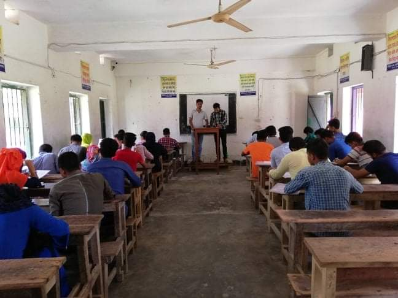
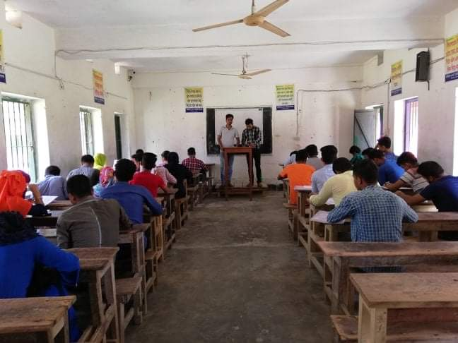

ছাত্রজীবনকে বলা যায় জীবন গঠনের উপযুক্ত সময়।
টাইপ করার সাধারণ নিয়ম হচ্ছে ইংরেজিতে প্রতি মিনিটে ৪০টি শব্দ এবং বাংলা ২৫টি শব্দ টাইপ করতে পারতেই হবে।
কম্পিউটারের মাধ্যমে ডক ফাইল তৈরি করা হলো আরেকটি অন্যতম গুরুত্বপূর্ণ কম্পিউটার স্কিল।
যখন কেউ গাণিতিক সমস্যা কিংবা কোনো হিসাব-নিকাশের কথা বলে, তখন মাথায় আসে মাইক্রোসফট এক্সেল এর নাম। মাইক্রোসফট এক্সেল মূলত হলো একধরণের স্প্রেডশিট।
প্রোজেক্ট ডিসপ্লে এবং প্রেজেন্টেশন তৈরি করার ক্ষেত্রে যেই দুইটি সফটওয়্যার আমাদের সবচেয়ে বেশি সাহায্য করে, তা হলো গুগল স্লাইড এবং মাইক্রোসফট পাওয়ার পয়েন্ট।
গাণিতিক সমস্যা কিংবা কোনো হিসাব-নিকাশের কথা বলে, তখন মাথায় আসে মাইক্রোসফট এক্সেল।
কম্পিউটার নলেজ থাকাটাও জরুরি। কম্পিউটারের প্রাথমিক জ্ঞান থাকা এখন যেকোনো চাকরির জন্য বাধ্যতামূলক হয়ে দাঁড়িয়েছে।
ডিজিটাল বাংলাদেশ গড়া আমাদের মুল লক্ষ্য
Basic knowlegde of computer and basic work of computer
Microsoft office for offical and regular users
Website Design and Devlopment for office users
This is web Design. It is very important in web market in our daliy life. Web Design is web devloper devlop in her own design. That is is not for cold design. Every one design is very defferent for another design. But design is all most morden and profosinal desing search in there website.
This is Digital Markating. It is very important in web market in our daliy life. Web Design is web devloper devlop in her own design. That is is not for cold design. Every one design is very defferent for another design. But design is all most morden and profosinal desing search in there website.
This is Graphic Design. It is very important in web market in our daliy life. Web Design is web devloper devlop in her own design. That is is not for cold design. Every one design is very defferent for another design. But design is all most morden and profosinal desing search in there website.
CEO programer

CEO

Editor programer

Lectuer

My name is joydeb mondal. I am a student in class Hons. I read in BM college in barisal. I live in Bangladesh. My persent address in Barishal. Every man is try to work but hardwork is success. A good man success in her life but he do hardwork. We try hardwork than we are success.
 

এক সময় কম্পিউটার শিখাকে নিতান্তই কারিগরি শিক্ষার অন্তর্ভুক্ত বিষয় বলেই ভাবা হতো। কারিগরি শিক্ষায় আগ্রহি কিংবা বিজ্ঞান পড়ুয়া শিক্ষার্থীদের কম্পিউটার শিখা উচিত বলেও মনে করা হতো। এমন ধারনাকে আমাদেরকেই বদলেদিতে হবে। শিক্ষার্থীরা যতো বেশি কম্পিউটার শিখবে, দেশ ততো বেশি সমৃদ্ধ হবে। দেশকে এগিয়ে নিয়ে যেতে কম্পিউটার শেখার বিকল্প নেই। কারণ, আমরা পেশাগত জীবনে যে যেখানেই যাই না কেন, সেখানেই আমাদের কম্পিউটারের ব্যবহার জানতে হবে। তাই শিক্ষার্থীদের রুটিন পড়াশোনার পাশাপাশি ভালোভাবে কম্পিউটার শিখতে হবে। সাধারণ শিক্ষার যে কোনো বয়সী মানুষ যতো কৃতিত্বই প্রদর্শন করেন না কেনো, যদি তিনি কম্পিউটার না জানেন তাহলে দেশে-বিদেশে কোনো জায়গাতেই তিনি এখন আর ভালো অবস্থান তৈরি করতে পারেন না। কারণ, সকল কিছুই এখন কম্পিউটারাইজ্ড হয়ে যাচ্ছে। আর বাংলাদেশে যেখানে সকল সেক্টরে ডিজিটালাইজেশনের প্রক্রিয়া চলছে, সেখানে এ প্রক্রিয়ায় সম্পৃক্ত হতে কম্পিউটার জানা অর্থাৎ কম্পিউটার-সাক্ষর হবার কোনো বিকল্প নেই। এক সময় নিরক্ষরতাকে অর্থাৎ লিখতে পড়তে না জানাকে বলা হতো অভিশাপ, কিন্তু বর্তমানে অবস্থা এমন হয়ে যাচ্ছে যে, কম্পিউটার না জানাকেই বলা হচ্ছে কম্পিউটার-নিরক্ষর এবং এমন নিরক্ষরতাকেই এক সময় বাধ্য হয়ে বলতে হবে অভিশাপ। এই অভিশাপ দূরীকরণে অভিভাবকসহ শিক্ষার্থীদের সচেতন হতে হবে। শিক্ষার্থী মাত্রই নিজ তাগিদে কম্পিউটার সম্পর্কে পুস্তকী জ্ঞানে সমৃদ্ধ হতে হবে এবং ব্যবহারিক দিকটাকেও ভালোভাবে রপ্ত করতে হবে। তাই বোর্ড-বিশ্ববিদ্যালয়ের অধীনে অনুষ্ঠিত পরীক্ষা পাসের সনদের সাথে কম্পিউটার শিক্ষার প্রকৃত সনদ জোগাড়ের প্রয়োজনীয়তা তীব্রভাবে সকলের উপলব্ধির আওতায় নিয়ে আসা উচিত। শিক্ষা প্রতিষ্ঠানের শিক্ষার্থী ছাড়াও বিভিন্ন কর্মক্ষেত্রে কর্মরত কম্পিউটার-নিরক্ষর প্রতিটি মানুষকে স্বীয় পেশাগত উন্নয়নে কম্পিউটার-সাক্ষর হবার কথা ভাবতে হবে এবং সে ভাবনাকে দ্রুত কার্যকর করার উদ্যোগও নিতে হবে।